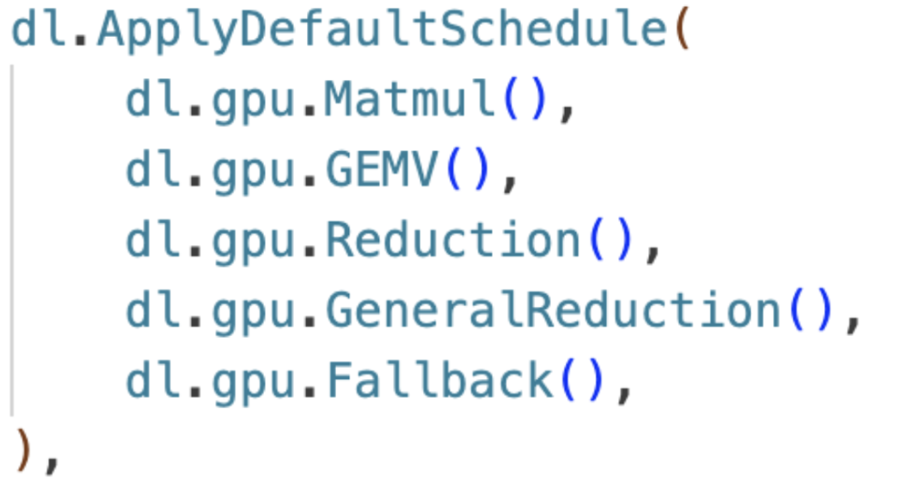

The goal of this project is two-fold: optimizing GPT-2’s inference performance with TVM on various GPU backends (e.g. CUDA, ROCm, WebGPU), and analyzing and tuning TVM’s auto-scheduler DLight. For the first part, we will implement GPT-2’s inference on the open-source framework MLC-LLM, which allows us to optimize LLM workloads with TVM conveniently. For the second part, we will analyze the effect of various transformations performed by DLight (both performance and code generation), perform benchmarks across devices, and further tune the scheduler to optimize GPT-2’s performance for a specific backend.
GPT-2 is a transformer-based decoder-only language model that can benefit significantly from parallelism due to its computational intensity. This project only focuses on the inference phase and focuses on the parallelism brought by multi-core GPUs, including CUDA (Nvidia GPUs), ROCm (AMD GPUs), and WebGPU (available on Chrome). Specifically, the matrix multiplications in GPT-2 can benefit significantly from such highly parallelizable backends.
To optimize the distribution and execution of the workload, we leverage TVM, a domain-specific framework for machine learning compilation. To use TVM, there are two general steps: defining the task, and optimizing the task with a scheduler. For the first step, we will use the recently developed open-source framework MLC-LLM, which is built on top of TVM and dedicated to large language models like GPT-2. For the second step, we focus on DLight, an auto-scheduler in TVM that optimizes machine learning workloads. An example usage of DLight is shown below.
Some general parallelizing optimizations include reducing data transfer under a GPU’s multi-core setting, dividing the workload to best leverage a GPU’s architecture (e.g. structuring of for loops), and incorporating various other techniques such as tiling. With these, we optimize the performance of GPT-2, measured by the number of tokens per second (for both the prefilling and decoding phases).
The inference of GPT-2 resembles that of most transformer-based decoder-only language models, revolving around various matrix-matrix multiplications. Given that we use a single device, the main characteristics of the workload include: it is computationally intensive due to the massive number of parameters, and it is easily bounded by memory bandwidth when using techniques like KV cache.
Some constraints that make the system hard to parallelize include the fact that inference in LLMs like GPT-2 is in an autoregressive manner, meaning that the generation of a token depends on the previous token—so we have to generate one token at a time sequentially. This poses a challenge because we can only try to exploit parallelism at a much lower level, mainly the operators like matrix multiplications.
While there is a plethora of optimization tricks and techniques, we focus on operator-level optimization. As mentioned above, we will use DLight to achieve such optimization. Since the project includes domain-specific programming, one challenge for us is to gain domain knowledge (e.g. what are the typical techniques for operator optimization, including how GEMV works), and another is to understand the existing software stack of TVM so that we can tune the scheduler. Since we aim to analyze the effect of various scheduling rules, one more challenge is that we need to understand the semantics of the generated code, some of which are not typical code we use (e.g. the WebGPU shading language).
To test GPT-2’s inference, we will use a single RTX 4090 for the CUDA backend, a single Rx 7900 for the ROCm backend, and an Apple Macbook for the WebGPU backend.
The first step of our project is to implement GPT-2 in MLC-LLM (i.e. specifying the algorithm to optimize). We will work with the existing code base MLC-LLM and submit a Pull Request.
The second step of our project is to analyze and tune the DLight schedule. We will refer to the codebase of DLight found here.Some other resources we will refer to include the TVM paper, the Relax paper (a new abstraction under TVM), and perhaps many more.
For specific languages like WebGPU shader language, we can refer to its documentation.This project is mainly an analysis project, hoping to understand how various scheduling rules in DLight affect the performance of LLM inference on various backends. With that being said, we plan to achieve the workload-defining part and the analysis part; we hope to achieve better results than the given scheduling rule on a specific backend by tuning the scheduler. We put it more concretely below.
Pick a specific backend, say WebGPU, and tune the scheduling rule tailored towards that backend, hoping to achieve better performance than the default schedule used.
For the poster session, we will dedicate a portion to give an overview of the GPT-2 inference workload, and how it can be optimized via TVM (the task-defining portion, and the performance-optimizing portion). Afterward, for each scheduling rule, we will describe what it does, give an example change in the code (e.g. after this transformation, how this CUDA kernel changed), and draw a graph that compares how each backend benefits from this rule. If we achieve our stretch goal, we will add another section illustrating how we achieve better speedup than the default scheduling rule.
First of all, we use GPUs because this is the typical go-to type of device for machine learning workloads due to how good they are for matrix operations. We include CUDA (i.e. Nvidia GPU) mostly as a reference since this is the most conventional GPU backend. We include WebGPU because while the default schedule may be highly optimized for common backends like CUDA, it may not be the case for less conventional ones like WebGPU. This gives us the space to potentially gain more speedup by tuning the scheduling rule. We include ROCm (i.e. AMD GPU) as a middle ground.
After implementing GPT 2, we ran its inference with TVM on the CUDA backend (with a single RTX 4090), on a Macbook Pro (Intel), and on the WebGPU backend (on the same Macbook Pro). We use the number of tokens per second to describe the performance. Specifically, we prefill 322 tokens (the entire Gettysburg Address) and let the model generate 64 tokens autoregressively.
| Prefill (tokens/sec) | Decode (tokens/sec) | |
|---|---|---|
| RTX 4090 | 4419.0 | 102.9 |
| MacBook Pro (Intel) | 28.9 | 1.1 |
| WebGPU (same MacBook Pro) | 10.96 | 0.81 |
From the result, one thing to notice is that, despite leveraging the same hardware, we are receiving worse results on the WebGPU backend. This makes one of the goal for us to explore better operator-level optimization for the WebGPU backend to utilize its hardware better, hopefully closing the gap. Note that we mentioned in the proposal that we will also be testing on the ROCm backend (AMD GPU) – due to hardware issues, we will supplement the result in the final submission.
Recall that, as mentioned in the proposal, we focus on operator-level optimization within TVM, and such optimization is done in a sub-framework called DLight. The usage of DLight can be illustrated as below:
After implementing GPT-2 in MLC LLM, another benchmarking we did was to determine how much effect each rule has on the performance. Below are the results after running the same experiment on RTX 4090 (prefilling 322 tokens, generating 64 tokens autoregressively):
| Schedule | Prefill (tokens/sec) | Prefill Speedup | Decode (tokens/sec) | Decode Speedup |
|---|---|---|---|---|
| Baseline | 70.0 | 1x | 3.5 | 1x |
| Matmul | 3321.4 | 47.4x | 3.5 | 1x |
| GEMV | 70.1 | 1x | 53.5 | 15.3x |
| Reduction | 70.1 | 1x | 60.7 | 17.3x |
| Full | 4419.0 | 63.1x | 102.9 | 29.4x |
“Baseline” denotes without using any optimization, and “full” denotes using all optimization. Note that we consider Reduction() and GeneralReduction() as a single rule; we also note that due to the current implementation, we need to include Fallback() in all schedules, hence considering it as part of the baseline.
We observe that matrix multiplication contributes the most speedup for the prefill stage, which makes sense because during prefill, most operations are matrix-matrix multiplication. This is due to how we have multiple values in the Q matrix. Meanwhile, GEMV, which optimizes matrix-vector multiplication, contributes to the speedup during decoding. Similarly, this makes sense because we only have a single query token in the Q matrix during the decoding stage.
| SCHEDULE | Activities |
|---|---|
| Week 1 (11/13 - 11/19) |
|
| Week 2 (11/20 - 11/26) |
|
| Week 3 (11/27 - 12/3) |
|
| Week 4 (12/4 - 12/10) |
|
| Week 5 (12/11 - 12/17) |
|
Placeholder